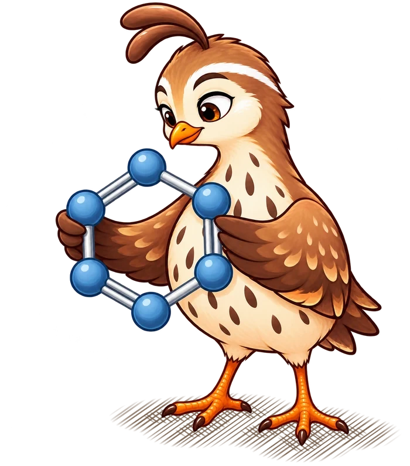

Метод Хюккеля
π-электронные системы плоских сопряжённых молекул: каждый атом даёт одну p-орбиталь, кулоновский интеграл α, резонансный β (β < 0) между соседями, перекрыванием пренебрегаем. Выберите молекулу или соберите свою; щелчок по атому меняет его тип (C → N → O), щелчок по уровню — показывает орбиталь.
Что нужно понять
- В методе Хюккеля π-система задаётся только связностью атомов: α на атомах, β между соседями.
- Коэффициенты МО дают заряды, порядки связей, энергию делокализации и индексы реакционной способности.
- Правило 4n + 2 следует из заполнения уровней на круге Фроста.
- Заряды (зарядовый контроль) и граничные орбитали (орбитальный контроль) могут указывать на разные реакционные центры.
- Электроотрицательность χ = (I + A)/2 и жёсткость η = (I − A)/2 — производные энергии по числу электронов; функции Фукуи f⁺ и f⁻ показывают, где молекула примет или отдаст электрон, — в методе Хюккеля это плотности НСМО и ВЗМО.
Границы модели: метод Хюккеля
- Что вычисляется
- π-орбитали, заряды и порядки связей сопряжённых молекул.
- Какие приближения приняты
- Только π-электроны; параметры α и β; перекрывание соседних орбиталей не учитывается.
- Какой вывод можно сделать
- Узловая структура и тенденции — да; энергии — только в единицах β.
Числа
Параметры гетероатомов
αX = α + hβ, βCX = kβ (значения Стрейтвизера). Гетероатом с h > 0 электроотрицательнее углерода: его уровень ниже, электронная плотность на нём выше. Атом, дающий в систему неподелённую пару (пиррольный N, фурановый O), вносит 2 π-электрона.
Глобальные индексы и функции Фукуи
Энергию как функцию числа электронов E(N) приближают параболой через E(N − 1), E(N), E(N + 1), то есть через потенциал ионизации I и сродство к электрону A. Её наклон — химический потенциал μ = −χ, кривизна — жёсткость η.
Функции Фукуи в методе Хюккеля
От Хюккеля к xtb: полуэмпирические методы
Метод Хюккеля — первый шаг лестницы приближённых методов. Расширенный Хюккель берёт все валентные орбитали и перекрывание; CNDO, INDO и NDDO (MNDO, AM1, PM3, PM7) вводят двухэлектронные интегралы, но пренебрегают дифференциальным перекрыванием разных атомов; GFN2-xTB — сильная связь с зарядами, мультиполями и дисперсией D4 для всей таблицы до Rn. Сколько интегралов остаётся на каждом уровне:
Проверьте свои знания
Задания по странице: выполните действие на странице и выберите ответ — он проверится сразу.
Бутадиен: сравните порядки π-связей 1–2 и 2–3. Что это говорит о длинах связей?
Порядок π-связи 2–3
Аллил: переключайте заряд +1, 0, −1. Что меняется в уровнях и что — в зарядах на атомах?
Бензол и циклобутадиен: сравните энергии делокализации и заполнение уровней на круге Фроста.
Циклопентадиенил: какой заряд делает систему ароматической? Сравните катион и анион.
Нафталин: куда пойдёт электрофил и куда радикал? Какая связь самая короткая?
Азулен — изомер нафталина. Посмотрите на молекулярную диаграмму: откуда у него дипольный момент?
Акролеин, нуклеофильная атака: сравните критерии «граничные орбитали» и «π-заряды».
Выберите бензол и щёлкните по атому 1, сделав его пиридиновым азотом. Как изменились заряды и куда теперь пойдёт нуклеофил?
Блок «Глобальные индексы»: какой атом из таблицы самый электроотрицательный по Малликену и какова его жёсткость?
Функции Фукуи акролеина CH₂=CH–CH=O: на какой атом нападёт нуклеофил по наибольшей f⁺?